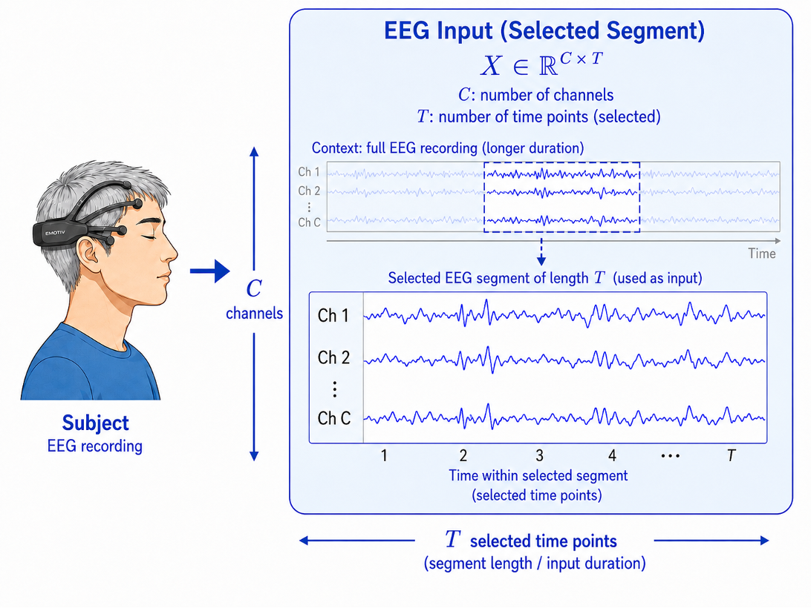
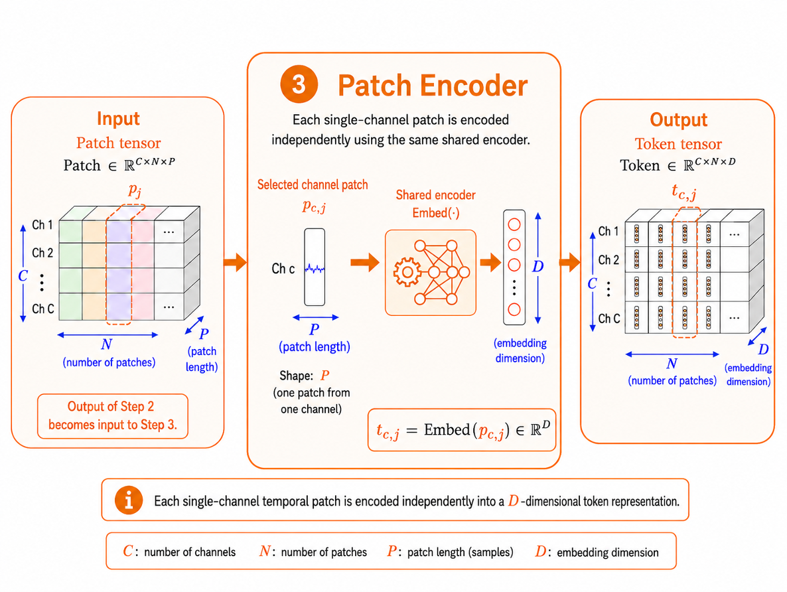
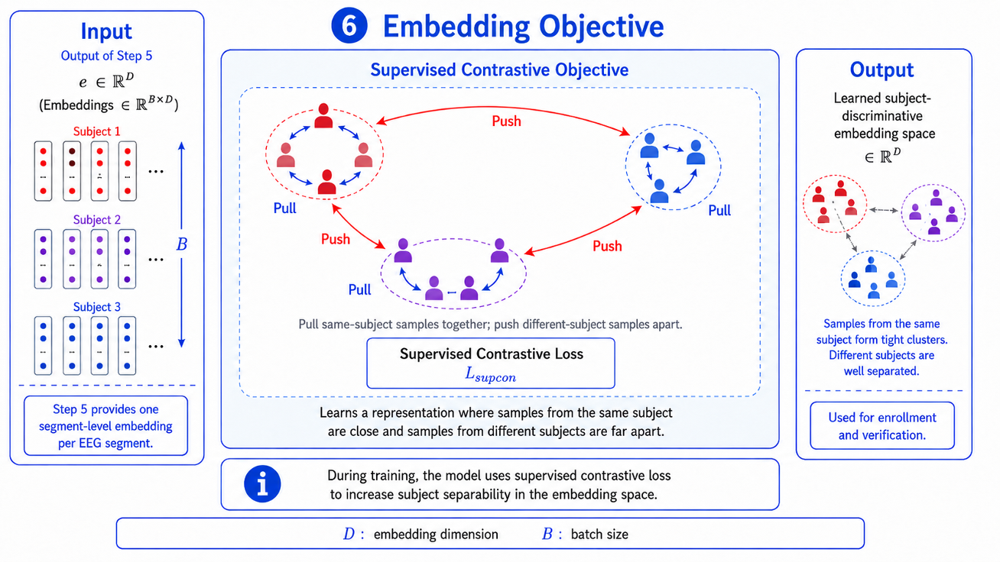
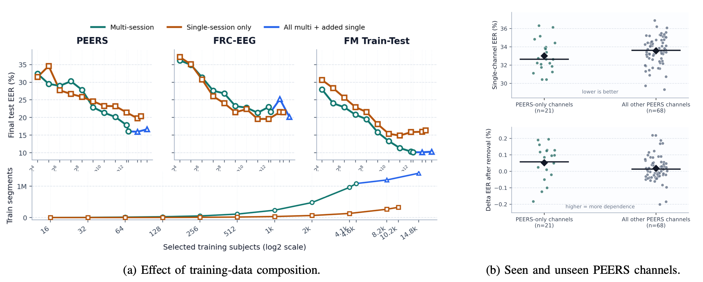
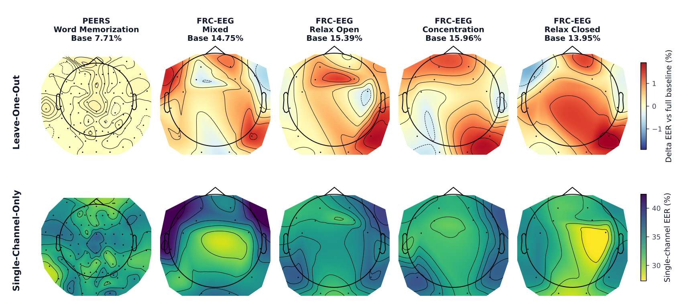

Abstract
A central challenge in EEG authentication is that models are typically tied to the acquisition settings in which they are trained. In particular, variations in headset hardware, channel layout, and signal duration create heterogeneous recordings that existing models are not designed to handle, causing each new headset or dataset to be treated as a separate model-development problem. This fragmentation limits multi-dataset learning, hinders knowledge transfer, and reduces model reusability. To address this limitation, we present NeuroShield, a reusable foundation model for EEG authentication that learns identity-discriminative embeddings from variable-channel and variable-length EEG recordings through a dual-stage transformer architecture. We pretrain NeuroShield on three public EEG datasets comprising 15,762 subjects and 28,116 sessions, and evaluate transfer on two unseen downstream datasets. Our evaluations show that, after fine-tuning, NeuroShield reduces equal error rate by 0.44–8.06 percentage points relative to the state of the art. NeuroShield further generalizes to segments longer than those seen during training and operates across channel layouts not encountered during pretraining. These results establish NeuroShield as a reusable and adaptable EEG identity encoder across heterogeneous recording settings. We release NeuroShield as open source to support reproducibility and community adoption.
Changelog
The NeuroShield paper was made publicly available as an arXiv preprint.
NeuroShield was submitted to the 48th IEEE Symposium on Security and Privacy (IEEE S&P 2027) for peer review.
Processing Pipeline
Authentication begins with an EEG segment.

The EEG signal is divided into fixed-length temporal patches, which serve as input tokens for the subsequent transformer-based processing.

NeuroShield employs a patch encoder to capture relationships between patches using self-attention.

The model generates a compact temporal summary and captures long-range temporal dependencies.

The model uses a learned coordinate encoder mapping each channel position to a geometry-aware positional embedding.

NeuroShield enhances subject separability using supervised contrastive loss.

Evaluation
The evaluation of the NeuroShield model supports the view that EEG authentication can be approached as a reusable representation-learning problem rather than as a sequence of isolated dataset-specific models.

The results show that NeuroShield achieves strong performance across heterogeneous pretraining settings, with lower equal error rates (EER) indicated by greener cells within each dataset.

The results show that NeuroShield is robust to varying input durations and channel layouts. The model generalizes to longer temporal windows than those seen during training (a) and remains largely unaffected by changes in channel ordering (b).

The results show that NeuroShield is robust to noisy or missing EEG channels, as the Equal Error Rate increases only gradually with higher channel-removal rates during verification.

The results show that NeuroShield benefits from multi-session pretraining data (a) and achieves comparable performance on both seen and previously unseen EEG channels, demonstrating strong channel generalization with low dependence on specific channel identities (b).

The results show that individual channel removal has only a limited impact on performance, while single-channel evaluations reveal spatial differences in the biometric information provided by different scalp regions.
3D Electrode Positions
Electrode channels present in foundation training and evaluation.
Read the Full Paper
Code Example
The source code is publicly available on GitHub. Clone the repository using:
gh repo clone kit-ps/NeuroShield-FMThe simplest model input is a NumPy archive containing EEG windows (shape [N, C, T], dtype float32), a channel-validity mask (shape [N, C], dtype bool), and 3D channel positions (shape [N, C, 3], dtype float32).
Here, N denotes the number of windows, C the number of channel slots in the batch, and T the number of samples per window.
python examples/minimal_inference.py --input-npz sample_batch.npz
--output-npy sample_embeddings.npyThe `.npz` file must contain the arrays `X`, `M`, and `P`. The script then loads the pretrained checkpoint from ckpts_bw_replicate_varlen/ and writes one embedding per input window.
mod = _import_train_module(str(args.cuda_devices))
device = _resolve_device(mod, str(args.cuda_devices))
model, embed_dim = mod.build_model(
trial=None,
num_channels=len(mod.REF_CLIST_NORM),
device=device,
fixed_params=trial_params,
)BibTeX
@article{fallahi2026neuroshield,
title = {NeuroShield: A Device-Agnostic Foundation Model for EEG Authentication},
author = {Fallahi, Matin and Arias-Cabarcos, Patricia and Strufe, Thorsten},
journal = {arXiv preprint arXiv:2606.20673},
year = {2026},
doi = {10.48550/arXiv.2606.20673},
url = {https://arxiv.org/abs/2606.20673}
}